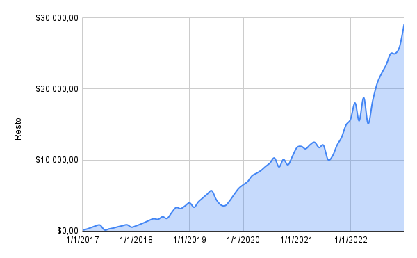

¿Como calculamos las perdidas contra la inflación?
Primero tomamos la evolución salarial ingresada para el periodo determinado. Una vez hecho eso tomamos el primer salario y creamos un salario hipotetico ajustado por inflación para el periodo seleccionado.

Una vez con esos datos procedemos a calcular la diferencia entre ambos (se resta uno con el otro)
Y finalmente, previo a sumar dicha diferencia, se ajustan por inflacion todos los salarios a la ùltima fecha del periodo seleccionado.

Este ultimo gráfico debería ser mucho más horizontal. Nos están mintiendo sobre la inflación?